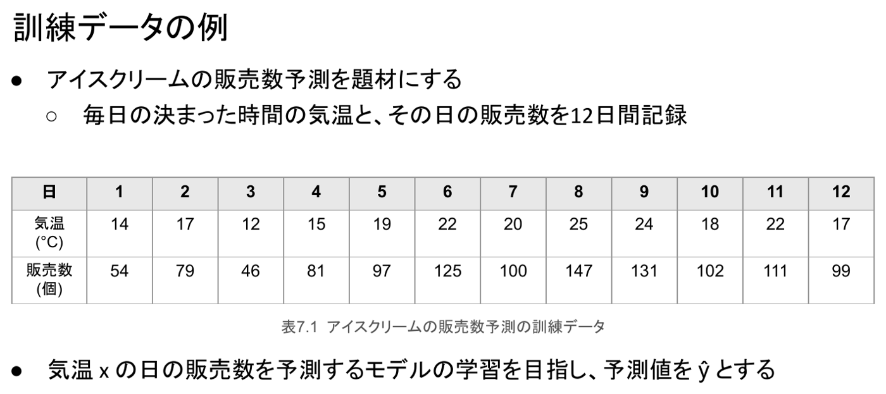
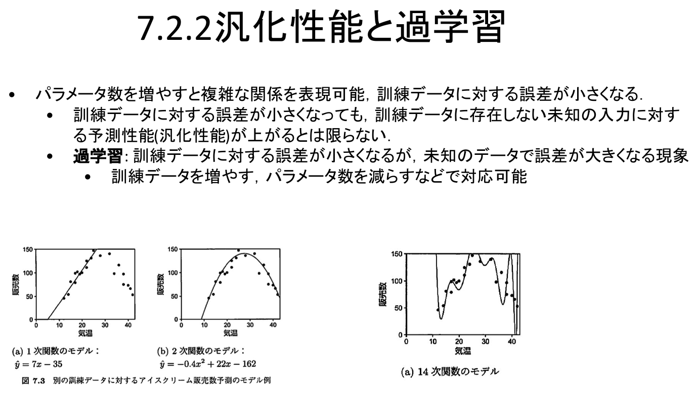
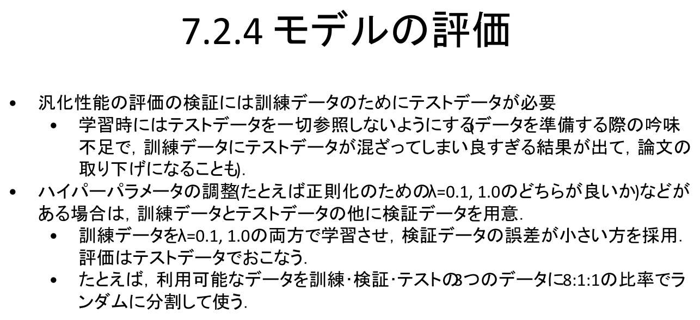

情報｜田中哲郎クラス講義ノート
このページは講義スライドの流れを節単位に組み直し、用語の関係と学習上の要点を説明する。教師あり学習・過学習・評価を中心に、定義だけでなく、なぜ必要か、どのように使うかまで確認する。
第2章で見たとおり、インターネットと情報システムの普及により、ウェブページやSNSの文章・写真・動画、LINEなどのメッセージ、オンライン通販の購買・閲覧履歴、キャッシュレス決済の記録、ICカード乗車券やETCの移動記録など、さまざまな情報がデータとして大量に蓄積されるようになった。デジタル空間・物理空間で蓄積されるこの大量のデータをビッグデータと呼ぶ。
データは集めるだけでは価値を持たず、そこから取り出される意味や知見にこそ価値がある。しかしデータが大量になるほど人間による分析は困難になり、情報技術の支援が不可欠になる。コンピュータを用いてデータの分析・予測を行う技術を機械学習という。人間は経験を通じてルールやパターンを学習し判断・意思決定に用いるが、機械学習では経験の代わりにデータをコンピュータに与え、ルールやパターンを学習させる。大量のデータから複雑なルールやパターンを学習できるため、人間の判断を支援・自動化できる。
なぜ機械学習が必要なのか。迷惑メールの検知を例に考えると分かりやすい。単純な方法は「free」「earn money」のような特定の単語・フレーズのリストでフィルタリングすることだが、迷惑メールの文面は絶えず変化するため、リストを人手で更新し続けるのは限界がある。機械学習を用いれば、単語の並び順などのパターンをデータから学習し、より精緻にフィルタリングできる。同じ構図は他の応用にも見られる。
本章の標題が示すとおり、機械学習は人工知能を実現するための代表的な技術のひとつと位置づけられる。ルールを人間が明示的に書き下す代わりに、大量の入出力例から規則そのものをデータ駆動で作り出す点が、従来の固定規則によるプログラムとの本質的な違いである。次節以降では、この「データから規則を作る」手続きを、教師あり学習という具体的な枠組みに沿って一段ずつ分解していく。
機械学習にはいくつかの種類があるが、最も代表的なものが教師あり学習である。ある入力が与えられたときに対応する出力の情報を予測するモデルを得る学習の段階と、学習したモデルを用いて未知の入力に対する情報の予測を行う推論の段階に分かれる。気温からアイスクリームの販売数を予測する場合は入力が気温、出力が販売数であり、迷惑メール判定をする場合は入力がメール本文、出力が迷惑メールか否かを表すカテゴリ変数である。前者は数値を予測する例、後者はカテゴリを予測する例であり、この違いは7節（回帰と分類）で改めて整理する。
この二段階の区別は本章全体を通じて重要になる。学習の段階でしか使えないもの（訓練データ、正解ラベル）と、推論の段階で初めて試されるもの（未知の入力）を混同すると、後述する過学習やデータ漏洩の問題を正しく理解できない。具体的な題材として、アイスクリームの販売数予測を最後まで使う。毎日の決まった時間の気温と、その日の販売数を12日間記録した訓練データが表7.1である。

最も単純なモデルは、気温 $x$ と予測値 $\hat y$ の関係を $\hat y = wx+b$ と表すモデルである。$w,b$ はそれぞれ重み・バイアスなどと呼ばれるパラメータで、機械学習の文脈ではバイアスを含めた形でも線形モデルと呼ぶ（6.2.1項参照）。たとえば $w=7,\ b=-35$ とした「モデル1」は $\hat y=7x-35$ であり、気温15℃のとき $\hat y=7\times15-35=70$ 個と予測する。
推論の段階は、決まったモデルを用いて入力を評価する順問題に対応する。これに対し学習の段階は、訓練データをうまく説明するようにモデルのパラメータを定める逆問題（6.3.1項参照）に対応する。「モデルを当てはめる」という作業は、見た目ほど機械学習に固有の操作ではなく、第6章で学んだ順問題・逆問題という枠組みの具体例である。
モデル1（$\hat y=7x-35$）と、別のモデル2（$\hat y=3x+40$）を比較する。気温14℃のとき、モデル1は $\hat y=7\times14-35=63$ 個、モデル2は $\hat y=3\times14+40=82$ 個と予測する。訓練データではこの日の販売数は54個なので、モデル1の誤差の方が小さい。この「誤差が小さい方が良いモデル」という直感を、全データに対して定量的に測る方法が必要になる。
誤差の正負の影響を無視するため、真値と予測値の差の2乗である2乗誤差を用いる。気温14℃の例では、真値54・モデル1予測63なので2乗誤差は $(54-63)^2=81$ である。訓練データに $m$ 件の入出力のペアが含まれ、$i$ 番目のペアを $(x^{(i)},y^{(i)})$、その入力に対するモデルの予測を $\hat y^{(i)}$ とすると、2乗誤差の平均は次のようになる。この値をモデルのパラメータについての関数とみなしたものを損失関数と呼ぶ。
表7.1の12日分すべてについて2乗誤差を求めて平均すると、モデル1は $(81+25+\cdots)/12=63.4$、モデル2は $(784+144+\cdots)/12=311.9$ となる。モデル1の方が平均2乗誤差が小さく、訓練データに対してより正確な予測をしていると言える。
教師あり機械学習の学習とは、この損失関数を最小化するパラメータを求めることにほかならない。一般的なモデル $\hat y=f_\theta(x)$ について、パラメータ $\theta$ を求める問題は、損失関数を目的関数とした最適化問題（6.3節参照）として次のように記述される。
ここで重要なのは、「良いモデルを探す」という一見あいまいな作業が、第6章で扱った最適化問題の言葉で厳密に定式化できるという点である。モデルの形（線形か、多項式か、ニューラルネットワークか）を決めれば、あとは損失関数を最小にする $\theta$ を求める計算の問題に帰着する。
パラメータ数を増やせば、モデルはより複雑な関係を表現できるようになり、訓練データに対する誤差はいくらでも小さくできる。しかし、訓練データに対する誤差が小さくなっても、訓練データに存在しない未知の入力に対する予測性能（汎化性能）が上がるとは限らない。
訓練データに対する誤差は小さくなるのに、未知のデータでは誤差がかえって大きくなる現象を過学習という。訓練データを増やす、パラメータ数を減らす、あるいは次節で述べる正則化を行うことで対応できる。
講義スライドの図7.3は、最初の12日分より広い気温範囲を含む別の訓練データに、次数の異なるモデルを当てはめた例である。1次関数モデル $\hat y=7x-35$（直線）は、気温が高くなるほど販売数が頭打ちになり減少に転じるという訓練データの傾向を表現できず、系統的にずれてしまう（複雑さが不足している状態）。2次関数モデル $\hat y=-0.4x^2+22x-162$ は、気温27.5℃付近で販売数が最大（$\hat y\approx140$）となる山型の関係をよく捉えており、ちょうど良い複雑さの例といえる。ところが14次関数モデルになると、訓練データの各点をほぼ正確に通るものの、点と点の間で予測値が激しく上下に振動し、特にデータ範囲の端では現実的にありえない値まで暴れる。これが過学習の典型例であり、訓練誤差だけを見て「良いモデル」と判断してはいけない理由である。

前節の14次関数モデルが激しく振動していたのは、訓練データの各点を無理に通そうとして、パラメータの値が極端に大きくなっていたためである。パラメータ数（モデルの複雑さ）を変更せずに過学習を抑える技術が正則化である。
解くべき最適化問題の目的関数に、パラメータの大きさに応じた項（正則化項）を加えるのが一案である。パラメータの2乗和にハイパーパラメータ $\lambda$ を乗じて損失関数へ加えるものをL2正則化（あるいはリッジ正則化）と呼ぶ。
$\lambda\,\|\theta\|^2$ の項があると、パラメータを極端に大きくすること自体に「コスト」がかかるため、訓練データにぴったり合わせるためだけに暴れるようなパラメータは選ばれにくくなり、より滑らかなモデルが選好される。ただし $\lambda$ は、学習（損失最小化）そのものの中では直接決められないという点に注意する。$\lambda$ を大きくするほど正則化は強く効くが、大きすぎればモデルが単純になりすぎて訓練データすら説明できなくなる。$\lambda$ はハイパーパラメータと呼ばれ、次節で述べる検証データを使って別途調整する必要がある。
汎化性能を正しく評価するには、訓練データとは別にテストデータが必要である。学習時にはテストデータを一切参照しないようにしなければならない。
データを準備する際の吟味不足で、訓練データにテストデータが混ざってしまうことがある。この場合、モデルは事実上「答えを知っている」データで評価されるため、実際にはあり得ないほど良い結果が出てしまう。こうしたデータ漏洩が後から発覚し、論文の取り下げに至った例もある。テストデータは、学習が完全に終わるまで一度も学習用プログラムの目に触れさせてはならない。
正則化のハイパーパラメータ $\lambda$ の調整のように、訓練データだけでは決められない選択がある場合は、訓練データ・テストデータのほかに検証データを用意する。たとえば $\lambda=0.1$ と $\lambda=1.0$ のどちらが良いかを決めたいときは、訓練データを使って両方の $\lambda$ でモデルを学習させ、検証データに対する誤差が小さい方を採用する。最終的な性能評価は、それまで一度も使っていないテストデータでおこなう。
訓練データはパラメータ $\theta$ を決めるために使い、検証データはハイパーパラメータ（$\lambda$ やモデルの次数など、学習そのものでは決まらない設定）を選ぶために使い、テストデータは選び終えたモデルの汎化性能を一度だけ測るために使う。役割が異なる3種類のデータを混同しないことが、正しい評価の前提になる。利用可能なデータを、たとえば訓練・検証・テストの3つに8:1:1の比率でランダムに分割して使うのが一例である。

これまで扱ってきたアイスクリームの販売数予測のように、数値を予測する問題を回帰問題という。これに対し、入力が属するカテゴリを予測する問題を分類問題という。手書きの数字文字を「0」「1」……「9」のいずれかに認識する問題が分類問題の典型例である。
迷惑メールかどうかの判定を例にとる。メール中の単語数とリンク数を変数 $x_1,x_2$ で表し、$x=(x_1,x_2)$ として、迷惑メールらしさを $f_\theta(x)=w_1x_1+w_2x_2+b$ で表す。$f_\theta(x)\ge0$ ならメール $x$ を迷惑メールと判定し、$f_\theta(x)=0$ が判定の境界線（決定境界）になる。回帰と同じ線形結合の式が、しきい値との比較を通じて分類にも使われている点に注目したい。
分類問題のもっとも単純な損失は、予測が誤りのときは1点、正しいときは0点として平均をとる0/1損失関数である。直感的には分かりやすいが、この損失は入力をわずかに変えても値が0か1のどちらかに飛ぶだけで滑らかに変化しないため、効率的に最小化を解くことができない（第6章で扱った勾配を用いる最適化手法が使えない）。
そこで、モデルの出力を「$y=1$ である確率」（迷惑メールである確率）とみなす方法をとる。線形結合の出力 $z=f_\theta(x)$ をそのまま確率として扱うことはできない（確率は0以上1以下でなければならない）ので、シグモイド関数 $\sigma(z)=\dfrac{1}{1+e^{-z}}$ を用いて、任意の実数 $z$ を0から1の範囲の値へ写す。
正解を $y\in\{0,1\}$、モデルによる「$y=1$ である確率」の予測を $\hat y=\sigma(f_\theta(x))$ とすると、交差エントロピー損失は次のように定義される。0/1損失と異なり滑らかな関数であるため、勾配を使った最適化で効率的に最小化できる。
回帰の2乗誤差、分類の交差エントロピーは、いずれも「予測のずれを数値化し、それを最小化する」という同じ最適化の枠組みの中にある。モデルの形（線形かどうか）と損失関数の選び方（2乗誤差か交差エントロピーか）を問題の性質に合わせて選ぶことが、教師あり学習の設計そのものである。この節で述べたロジスティック回帰（シグモイド関数＋交差エントロピー）は、より複雑なニューラルネットワークの最も基本的な構成要素でもある。
表7.1のうち、気温17℃の日は2日あり、販売数はそれぞれ79個・99個である。モデル1（$\hat y=7x-35$）とモデル2（$\hat y=3x+40$）について、気温17℃・販売数79個の日の2乗誤差をそれぞれ求めよ。
モデル1：$\hat y=7\times17-35=84$、2乗誤差は $(79-84)^2=25$。モデル2：$\hat y=3\times17+40=91$、2乗誤差は $(79-91)^2=144$。この日についてもモデル1の方が誤差が小さい。
14次関数モデルは12日分の訓練データに対する2乗誤差の平均が、2次関数モデルより明らかに小さかったとする。このことから「14次関数モデルの方が優れている」と結論してよいか、理由とともに述べよ。
結論してはいけない。訓練誤差が小さいことは、そのモデルが訓練データを丸暗記に近い形で再現していることを意味するにすぎず、未知の気温に対する予測性能（汎化性能）を保証しない。図7.3が示すように14次関数モデルは点と点の間で激しく振動しており、テストデータのような未知の入力ではむしろ誤差が大きくなる過学習が疑われる。優劣はテストデータでの評価で判断すべきである。
正則化の強さ $\lambda$ を、訓練データに対する損失 $L_{\text{reg}}(\theta)$ が最小になるように選んではいけない理由を説明せよ。
訓練データに対する損失だけを基準にすると、正則化項が小さいほど（$\lambda=0$ に近いほど）訓練データへの当てはまりは良くなるため、常に $\lambda$ を小さくする方向に選ばれてしまい、正則化の意味がなくなる。$\lambda$ は汎化性能を高めるための設定なので、訓練に使っていない検証データでの誤差を基準に選ぶ必要がある。
Google Colaboratory教材「教師あり学習とニューラルネットワーク」（UTOLの教材内にリンクがあり、ECCSクラウドメールでのログインが必要）で、この章で述べた学習・推論・損失関数の最小化を実際に動かして確認できる。
用語を単独で暗記するのでなく、題材のどこにその概念が現れ、どの条件を根拠に判断するかを説明できるようにする。
教師あり学習・過学習・評価は独立した暗記事項ではなく、情報を表現し、処理し、伝え、社会で安全に利用するための一連の考え方としてつながっている。各節の太字語を自分の言葉で説明できるか確認しよう。